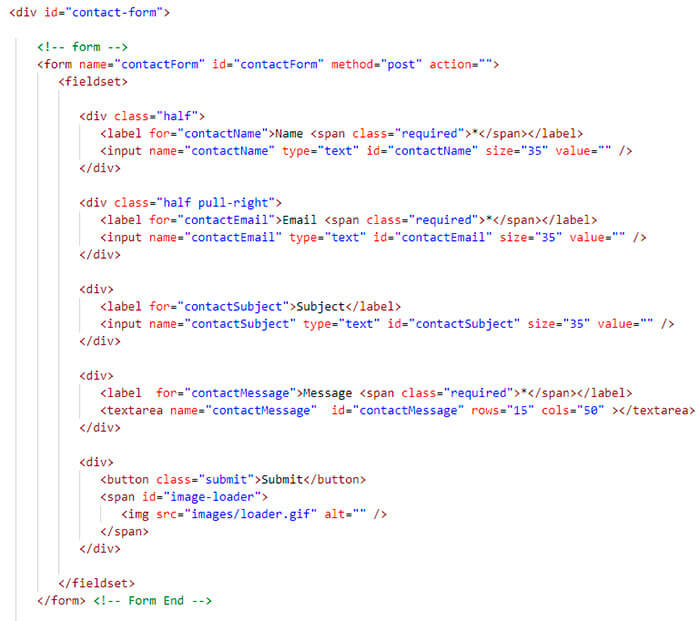
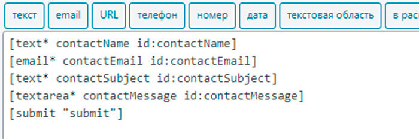
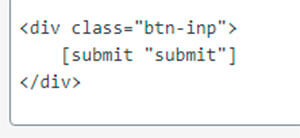

Работать в ВП с формой можно через плагины(Contacts Form 7 или Ninja Forms).
Качаем плагин CF7, активируем и в меню слева появится раздел с этим плагином. Заходим в него и видим по умолчанию уже есть одна форма - Контактная форма 1, попробуем изменить её. Зайдём в неё и удалим из шаболна все шорткоды. Далее смотрим в нашу вёрстку, она выглядит так:
Как видно у нас каждый лейбл с инпутом обёрнут в тег div, реализовать это в CF7 сложно, но попробуем.
Итак видим что первый инпут это текстовое поле, идём в шаблон где мы удалил все шорткоды и чуть выше жмём на кнопочку - "текст", откроется модальное окно, ставим галочку "Обязательное поле", имя пишем такое как задан name у инпута - "contactName", значение по умолчани не ставим ничего, так как в вёрстве атрибут value пустой и никакого placeholder нет. Затем поле "Атрибут id" также ставим такой как задан в id инпута - "contactName", ну и также указываем класс если он есть. Ну и жмём "Вставить тег". Дальше у нас поле email, делаем такие же действия. Затем текстовое поле subject, всё то же самое что и с первым полем. А далее идёт текстовая область(textarea), жмём на соответсвующую кнопочку, ставим обязательное, имя, id. Как видим по вёрсте в конце нам надо вставить кнопку "Отправить". Заметим что в вёрсте это button, а нам нужно желательно инпут, но на это мы не можем повлиять, поэтому жмём в шаблоне на кнопочку "отправить", в модальном окне в поле "Ярлык" вставляем submit и всё. Все поля добалены жмём "Сохранить" и выше в синей полоске указан шорткод нашей формы. Идём в вёрстку и закоментируем там нашу форму. Затем нам надо вставить тут как то этот шорткод, для этого есть функция do_shortcode(), параметром в которую и вставляем шорткод:
<?php echo do_shortcode('[contact-form-7 id="95" title="Контактная форма 1"]'); ?>
Сохраняем и смотрим что получилось, но получилось немного другая форма - нет лейблов, форма не разделяется на 2 части как в вёрстке было, а всё из за того что у нас инпуты не обёрнуты в div как в вёрстке. Поэтому идём опять в шаблон и там попытаемся встывить наши div. До дивов это выглядит так:
После вставки дивов выглядит так:

Ну вот уже форма похожа на ту что в вёрстке. Осталась только кнопка отправить, она у нас инпут, а в вёрстке она button, из за этого наша кнопка вытянулась на всю длину. Для этого в шаблоне в нашу кнопу в тег div добавим класс наприме btn-inp и пропишем этот класс в стилях, задав ширину нашему инпуту.
Теперь немного поговорим о других вкладках, которые есть в нашем плагине CF7.
Это вкладка "Письмо" и другие. Чтобы всё не описывать, можно посмотреть в видео с 00:09:45 до 00:11:15
Столкнулся с проблеммой, при активации плагина CF7 на главной странице перестаёт работать слайдер, дело было в конфликте имени $. Плагин видимо использовал либо другую версию jquery либо использовал бибилиотеку с таким же именем, пришлось залезть в скрипт, который выдвал эту ошибку и исправить там имя $ на jQuery, строки где я исправил это 13, 44, 60, 62, 72 в файле init.js темы sparrow, вдруг нужно будет обратно вернуть имя $.
Письма посылаются с локального сервера, если это Open Server, в папку: C:\ospanel\userdata\temp\email
Пока не буду описвать как работать с формами в этом плагине, в видео можно посмотреть с 00:11:30
Бывает, что не нужны какие то глабальные формы для получения заявок от посетителей, а достаточно и маленькой формы где нибудь в сайдбаре в один инпут, где посетитель может оставить номер телефона, по которому ему потом можно перезвонить. И формочка далжна быть такой чтобы её можно было из админки самому настроить без всяких плагинов и был свой php обработчик. Также нужно чтобы для отправки телефона использовался ajax. Давайте сперва напишем скрпит с ajax запросом. Для этого в нашей теме создадим скриптовый файл например ajax.js и подключим его как обычно через functions.php. Далее пишем сам скрипт, форму возьмём для примера ту что в вёрстке находится contact.html темы sparrow.
jQuery(function(){
let form = jQuery('#contactForm');
let action = form.attr('action');
form.on('submit', function(e){
let formData = {
contactName: jQuery('#contactName').val(),
contactEmail: jQuery('#contactEmail').val(),
contactSubject: jQuery('#contactSubject').val(),
contactMessage: jQuery('#contactMessage').val(),
};
jQuery.ajax({
url : action,
type : "POST",
data : formData
})
.done(function(){
form.html('Успех!!!');
})//в функции пишем код, который отработает в случае успешной отправки формы
.fail(function(){
form.html('Провал!!!');
})
e.preventDaefault();
})
});
Далее нам надо в форме в атрибуте action указать файл-обработчик, но если мы укажем там просто файл, который лежит например рядом в той же папке, то ВП заблокирует такие действия. Вообще если мы хотим что то отправить через ajax, то ВП обрабатывает этот запрос через специальный файл admin-ajax.php. Для того чтобы туда попасть нужно в атрибуте формы action написать код:
<?php admin_url('admin-ajax.php?action=send_mail'); ?>
send_mail - это наша функция, которая будет находится в functions.php и будет срабатывать, когда мы отправляем ajax запрос по админскому url в файл, котрый называется admin-ajax.php. Создадим эту функцию send_mail.
function send_mail(){
$contactName = $_POST['contactName'];
$contactEmail = $_POST['contactEmail'];
$contactSubject = $_POST['contactSubject'];
$contactMessage = $_POST['contactMessage'];
//wp_mail( $to, $subject, $message, $headers ) это ВП функция для отправки письма на почту, аналог mail() в php
// подразумевается что $to, $subject, $message уже определены...
$to = 'sasha.telegin512@yandex.ru';
//$to = get_option('admin-email');
/*либо тут можно подставить функцию ВП для установки емаил адреса администратора сайта ВП
функция называется get_option('admin-email');
у неё есть и другие параметры
*/
// удалим фильтры, которые могут изменять заголовок $headers
remove_all_filters( 'wp_mail_from' );
remove_all_filters( 'wp_mail_from_name' );
$headers = array(
'From: Me Myself <me@example.net>',//от кого
'content-type: text/html',
'Cc: John Q Codex <jqc@wordpress.org>',
'Cc: iluvwp@wordpress.org', // тут можно использовать только простой email адрес
);
wp_mail( $to, $contactSubject, $contactMessage, $headers );
wp_die();//завершаем функцию
}
Далее можно попробывать заполнить данные в форме на сайте и отправить письмо.
Пока не получается отправить писмо, разберусь допишу.